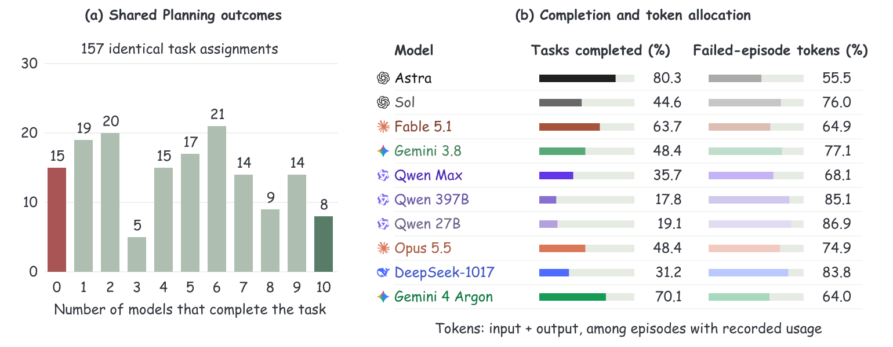
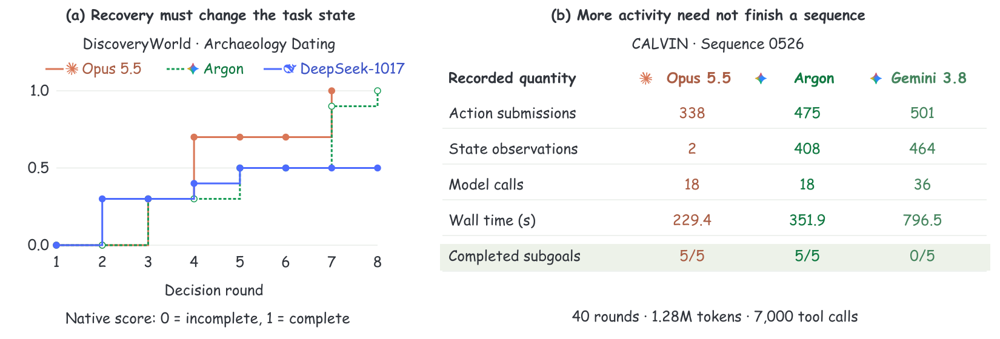

01 / Common Tasks
Model Diversity Does Not Remove the Shared Failure Set.
Astra completes 126 of the 157 Planning tasks. Across all nine models, at least one succeeds on 138 tasks: only 12 more than Astra alone. Nineteen tasks remain incomplete for every model, while only eight are completed by all nine. The remaining tasks reveal substantial disagreement about what each agent can finish.
The next evaluation target is the shared failure set, alongside the tasks on which models complement one another. The 19 common failures comprise four ALFRED tasks, four ALFWorld tasks, nine HumanCLAW tasks and two ScienceWorld tasks. These are observed outcomes on the shared task assignments; the union is an after-the-fact coverage count, not a tested routing policy.

| Model | ALFRED | ALFWorld | DiscoveryWorld | HumanCLAW | ScienceWorld | VirtualHome | All |
|---|---|---|---|---|---|---|---|
| GPT-6 Astra | 15/20 | 14/20 | 10/10 | 3/13 | 64/73 | 20/21 | 126/157 |
| GPT-6 Sol | 3/20 | 4/20 | 4/10 | 2/13 | 38/73 | 19/21 | 70/157 |
| Claude Fable 5.1 | 7/20 | 6/20 | 7/10 | 1/13 | 59/73 | 20/21 | 100/157 |
| Gemini 3.8 Flash | 2/20 | 4/20 | 5/10 | 3/13 | 45/73 | 17/21 | 76/157 |
| Qwen 3.8 Max | 3/20 | 2/20 | 3/10 | 0/13 | 29/73 | 19/21 | 56/157 |
| Qwen 3.5 397B-A17B | 1/20 | 3/20 | 1/10 | 0/13 | 11/73 | 12/21 | 28/157 |
| Qwen 3.5 27B | 0/20 | 4/20 | 1/10 | 0/13 | 14/73 | 11/21 | 30/157 |
| Claude Opus 5.5 | 3/20 | 9/20 | 3/10 | 3/13 | 43/73 | 15/21 | 76/157 |
| DeepSeek 4.1 Flash-1017 | 1/20 | 4/20 | 2/10 | 2/13 | 28/73 | 12/21 | 49/157 |
02 / Resources
Shorter Episodes and Fewer Decisions Are Different Advantages.
Median Planning episode duration ranges from 57.1 seconds for DeepSeek-1017 to 280.7 seconds for Sol. Completion rates differ at the same time, so a short run can reflect either efficient success or early failure. The source filter on the project page shows these quantities together.
Between 55.5% and 86.9% of each model’s recorded tokens are spent on unsuccessful episodes. Even Astra, which completes 80.3% of the assignments, spends 55.5% of its recorded tokens on the 31 that it does not complete. Repeated attempts consume resources without necessarily satisfying the remaining goal conditions.
| Model | Completed | Median time (s) | Time IQR (s) | Tokens in failed episodes | Usage records | Recovered / error episodes |
|---|---|---|---|---|---|---|
| GPT-6 Astra | 126/157 | 231.7 | 153.2–361.8 | 55.5% | 157/157 | 1/1 |
| GPT-6 Sol | 70/157 | 280.7 | 199.9–427.1 | 76.0% | 157/157 | 1/6 |
| Claude Fable 5.1 | 100/157 | 109.5 | 62.0–201.4 | 64.9% | 157/157 | 6/25 |
| Gemini 3.8 Flash | 76/157 | 61.8 | 28.6–175.9 | 77.1% | 157/157 | 4/24 |
| Qwen 3.8 Max | 56/157 | 273.6 | 192.7–407.3 | 68.1% | 133/157 | 10/50 |
| Qwen 3.5 397B-A17B | 28/157 | 98.7 | 58.2–136.4 | 85.1% | 144/157 | 2/55 |
| Qwen 3.5 27B | 30/157 | 77.9 | 55.5–127.8 | 86.9% | 145/157 | 3/43 |
| Claude Opus 5.5 | 76/157 | 135.6 | 105.3–211.0 | 74.9% | 157/157 | 48/105 |
| DeepSeek 4.1 Flash-1017 | 49/157 | 57.1 | 36.1–78.5 | 83.8% | 157/157 | 9/50 |
In the same HumanCLAW chair-navigation task, Astra completes in 18 rounds and 470.7 seconds; DeepSeek-1017 takes 65 rounds but 405.7 seconds. Model decisions, environment actions and wall time therefore need separate counters.
03 / Recovery
An Error Can Be Repaired. A Goal Still Has to Be Completed.
Opus 5.5 completes 48 of its 105 Planning episodes that contain a recorded execution error. Those recovered episodes account for 48 of its 76 successes. The error records include malformed code and rejected API use; this measures the observed agent-and-interface execution, rather than a separate coding benchmark.
The Archaeology Dating task makes the distinction visible. Opus 5.5’s first two rounds fail before an environment action. It then collects tools, excavates the sites, reads artifact ages and places the flag at the oldest site, reaching the native score of 1.0 in round seven. DeepSeek-1017 reaches 0.5 by round five, then its last three rounds end in code errors with no further environment steps.
Recovery is useful when it changes the task state. A revised response by itself is not evidence that the goal is any closer.
04 / Physical Progress
A Valid Action Is Not a Completed Subgoal.
On CALVIN sequence 0526, Opus 5.5 completes five subgoals using 338 action submissions, 18 model calls and 229.4 seconds. Gemini uses 501 action submissions and 464 state observations, yet finishes with zero of five subgoals after 36 calls and 796.5 seconds. Its final stop is the token budget. The current-subgoal queries show Opus advancing through retrieval, storage, stacking and the light switch; Gemini’s retained queries remain on the first lifting goal.
ALFRED provides a complementary example: Gemini completes the instruction to clean a soap bar and place it in the bathtub, while DeepSeek-1017 finishes with one of three goal conditions met. Both use eight model calls. On RoboCasa’s left-drawer task, Fable 5.1 completes in 20 rounds while Sol reaches its 24-round ceiling without the required final state.
Count verified changes in the task state, then relate them to actions, observations and elapsed time. This separates purposeful progress from activity that leaves the goal unsatisfied.

CALVIN sequence → · ALFRED goal conditions → · RoboCasa drawer →
Which budget actually stopped the episode?
In the selected BEHAVIOR-1K toolbox task, none of the eight recorded models completes the native goal. Episodes run for approximately 12–133 minutes and stop on token or round limits despite a 180-minute time ceiling. Simply allowing more wall time would leave those observed limits in place.
05 / Representation and Feedback
Better Observations and Richer Outputs Need Effective Control.
Astra leads rotation estimation and Planning; Gemini 3.8 Flash has the lowest numerical spatial error; Gemini 4 Argon leads Spatial Pass@1 and both region-overlap metrics; Opus 5.5 leads Baseline Manipulation. These rank changes make a single proxy inadequate for selecting an embodied generalist.

| Model | Box–mask IoU | Polygon IoU | Difference | Planning (%) | Manipulation (%) |
|---|---|---|---|---|---|
| GPT-6 Astra | 0.286 | 0.379 | +0.093 | 80.3 | 41.8 |
| GPT-6 Sol | 0.264 | 0.325 | +0.061 | 44.6 | 19.8 |
| Claude Fable 5.1 | 0.284 | 0.328 | +0.044 | 63.7 | 24.7 |
| Qwen 3.8 Max | 0.272 | 0.307 | +0.035 | 35.7 | 9.3 |
| Gemini 3.8 Flash | 0.251 | 0.291 | +0.040 | 48.4 | 18.7 |
| Qwen 3.5 397B-A17B | 0.116 | 0.092 | -0.024 | 17.8 | 9.9 |
| Qwen 3.5 27B | 0.013 | 0.051 | +0.038 | 19.1 | 11.0 |
| Claude Opus 5.5 | 0.311 | 0.397 | +0.086 | 48.4 | 47.8 |
| DeepSeek 4.1 Flash-1017 | 0.217 | 0.249 | +0.032 | 31.2 | 20.9 |
| Gemini 4 Argon | 0.356 | 0.441 | +0.085 | 70.1 | 44.0 |
Direct polygons increase mean region overlap for nine of ten models on the same 70 Affordance cases. Qwen 397B is the exception (0.116 box–mask IoU versus 0.092 polygon IoU). The representation can fit a region more closely, but that improvement is not itself a test of grasping or task execution.
The paired observation experiment supplies a stronger intervention: adding current RGB at every round changes Astra’s CALVIN success from 30% to 0%, and Fable’s from 0% to 40%, under the matched source budgets. Astra’s median input tokens rise from 0.32M to 1.21M while median submitted actions fall from 1,795 to 481. Extra feedback therefore changes both the available evidence and how the agent allocates its interaction budget.
An embodied generalist must use evidence to finish every required condition, before its decision and interaction budgets run out. The full benchmark measures that end-to-end outcome; the execution traces show where it is lost.
Evidence and Definitions
From Recorded Outputs to Reproducible Counts.
The Planning analysis uses 1,413 source reports: nine models evaluated on the same 157 task assignments. All report SHA-256 hashes were checked against the supplied log manifest. Native task identity was checked separately for the HumanCLAW wrappers whose model-specific canonical names differ. Completion counts reproduce the adopted main-table Planning results.
Time is reported episode wall time, or the last recorded agent-loop time where no total duration is supplied. It includes reported setup and environment interaction, so it is not model inference latency. IQR is the 25th–75th percentile. Token totals use recorded input plus output usage. Missing usage is excluded: coverage is shown for every model. Failure token share is the sum in unsuccessful episodes divided by the sum in all episodes with recorded usage. Recovery means native final success after an earlier recorded execution error; budget guards and timed-out rounds are excluded from that error count.
The video explorer contains 46 same-task groups, 143 episodes and 2,264 recorded rounds. Its Manipulation examples include later observation configurations; the original Baseline aggregate remains in the main results table. Per-episode settings, stop limits and source hashes accompany each trace. Native tool events are matched to round completion timestamps; any events without a close timestamp match remain separately available in the trace. Video excerpts and saved-observation sequences retain their own playback clock.
Author manuscript source (ZIP) ↓ · Editable figures (draw.io, SVG, PDF, PNG) ↓ · Planning episode metrics (CSV) ↓ · Analysis data (JSON) ↗ · Video episode metrics (CSV) ↓ · All execution comparisons ↗